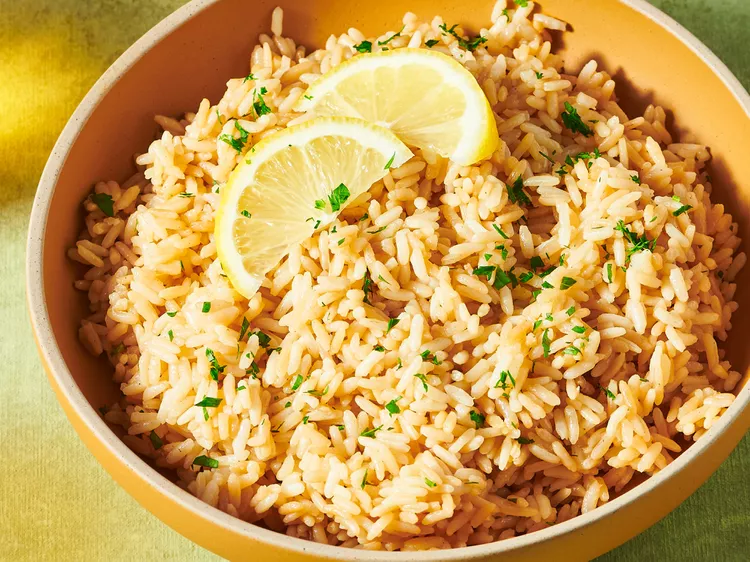

Home
Lemon Rice

Description
This was the Greek lemon rice that I grew up on. It's easy to make, full
of bright lemon flavor, and simply a delicious way to enjoy rice!
Ingredients
- ½ stick butter
- 2 cups converted long-grain white rice
- 1 (32 fluid ounce) container chicken broth
- ½ lemon, juiced or to taste
- 1 teaspoon salt
- 3 bay leaves
Steps
- Gather the ingredients.
-
Melt butter in a pot over low heat. Pour in rice and stir to coat in
butter. Let simmer on low heat, stirring occasionally, until toasted but
not burnt, about 10 minutes.
-
Pour chicken broth, lemon juice, salt, and bay leaves into rice mixture.
Bring to a rapid boil; continue to boil for 5 minutes.
- Reduce heat to a simmer, cover, and let simmer for 20 minutes.
-
Remove from heat and let sit, covered, for 10 minutes. Fluff with a fork
and serve.